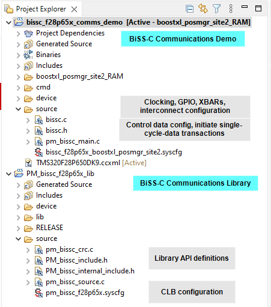
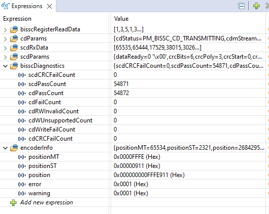
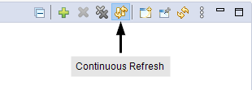

2. Build and Run the Example
This example provides a roadmap for integration of the library into an application.
Note
For Code Composer Studio information, refer to the Code Composer Studio User’s Guide.
2.2. Import and Run Example Project
The system example directory, [MC_SDK_ROOT]/solutions/boostxl_posmgr/<device>, contains a Code Composer Studio projectspec file. To import the project into CCS, follow these steps:
Install the minimum required tools. Refer to Minimum Requirements.
Import the example system demonstration.
In Code Composer Studio (CCS), click Project –> import CCS Projects..
Navigate to the system example directory:
[MC_SDK_ROOT]/solutions/boostxl_posmgr/<device>In the
ccs/bissc/directory, select thebissc_systemtest.projectspecfileClick Finish.
In the CCS Project Explorer you should now see the demo and library projects as shown in Fig. 2.1.
Note
When you import the system example, CCS will also import the associated library project.

Fig. 2.1 Code Composer Studio Project Explorer Window.
Select the build configuration of choice
To select the build configuration: right-click on the project
Select: build configurations and set active.
Select the build configuration.
The build configurations are:
- boostxl_posmgr_site2_RAM:
Builds the solution to load and run from RAM. The pin-out corresponds to the LaunchPad + BOOSTXL_POSMGR site2 as described in TIDM-1010 design guide.
- boostxl_posmgr_site2_FLASH:
The solution loads the demo to flash. At run-time, critical portions are copied to execute from RAM.
Select the active board configuration
Note
This step may or may not apply to your project. The image shown below is provided as an example only.
Some projects may include two board configuration files (.ccxml) as shown in Fig. 2.2. This occurs when the LaunchPad and ControlCard use different JTAG connections.
Right-click on the board configuration matching your hardware.
Select Set as active target configuration

Fig. 2.2 Board Configurations
Build the system example project
In the project manager window, Right-click on the project name
bissc_<device>_boostxl_comms_demoSelect Rebuild Project
Observe the console window for any errors or for successful completion of the build.
Once the build completes, without errors, execute the project by selecting Run –> Debug
Populate the expressions window
Right-click on the expressions window
Select import
Browse to the location
[SYS_ROOT]/shared/debug/Select the file
bissc_vars.txtand click openAt the top of the expressions window, enable continuous refresh as shown in Fig. 2.5.

Fig. 2.3 Code Composer Studio Import Expressions.

Fig. 2.4 Code Composer Studio Expressions Window.

Fig. 2.5 Enable Continuous Refresh.
Run the code
Press the Run/Resume button
Manually turn the shaft of the motor or encoder
Monitor the signals and variables in the expressions window. These structures and arrays are described in the globals section.